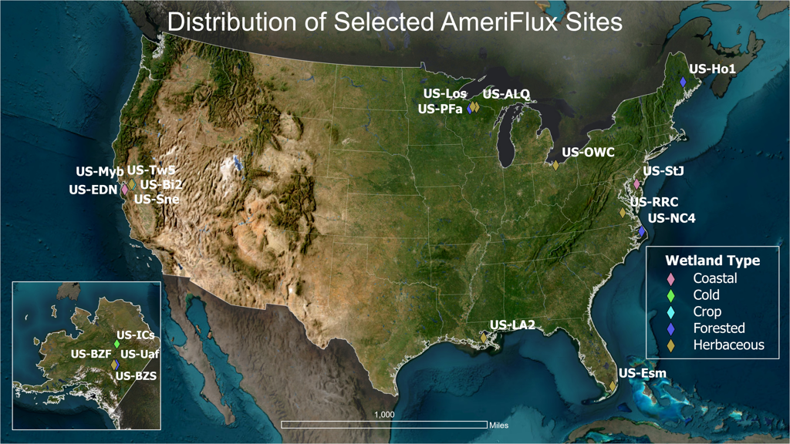
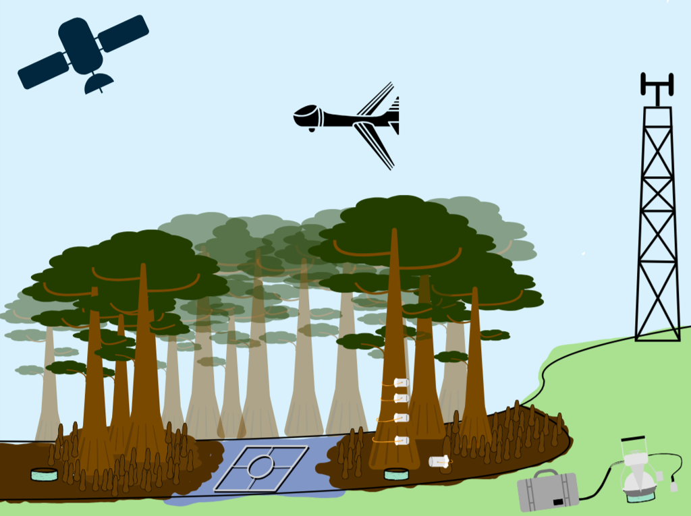
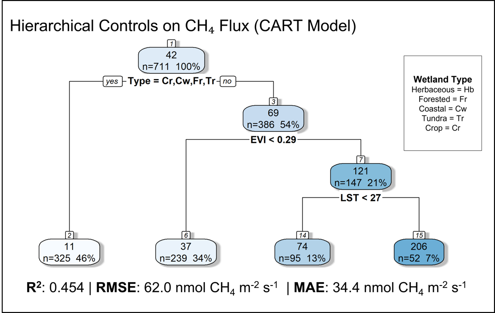
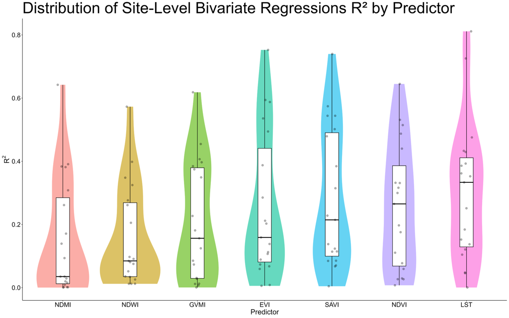
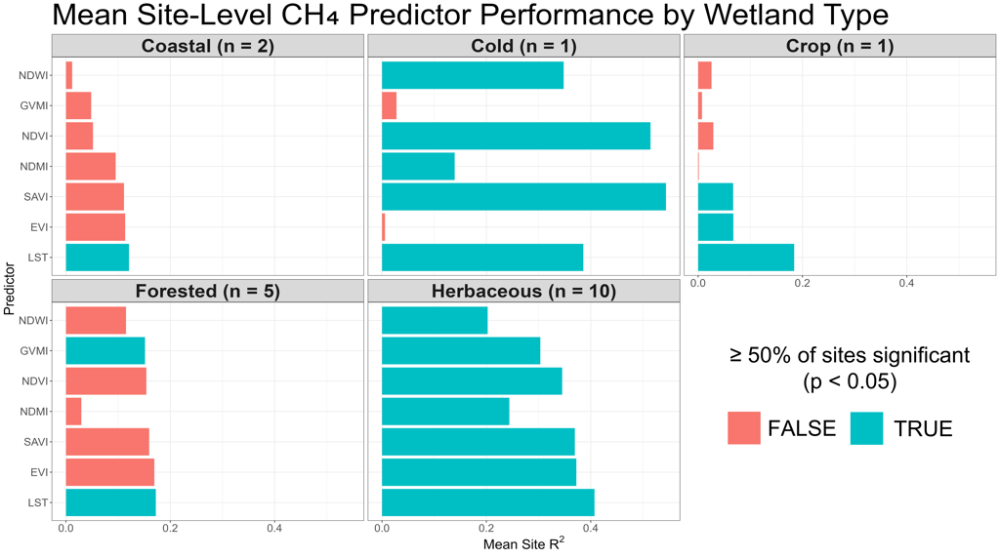

Project
Wetland Methane Flux Variability Inferred from In-Situ Eddy Covariance and Satellite Measurements
Abstract
Despite their small contribution to global land cover, wetlands are the largest natural source of atmospheric methane. Wetland methane emissions vary widely, and this variability introduces substantial uncertainties that limit our ability to accurately represent methane budgets. Satellite remote sensing provides scalable environmental indicators that may help explain this complexity across diverse wetland systems.
This study investigates relationships between methane flux and remotely sensed environmental drivers using eddy covariance observations from 19 AmeriFlux wetland sites. Methane flux measurements were aggregated to monthly means and paired with satellite observations from the Harmonized Landsat–Sentinel (HLS) dataset and VIIRS land surface temperature (LST) products from 2016 to 2024. Vegetation and hydrologic indices (NDVI, EVI, SAVI, NDMI, NDWI, and GVMI) were calculated in Google Earth Engine and joined with flux observations to create a dataset of 1,017 site-month observations.
Initial linear regression analyses revealed significant relationships between methane flux and several vegetation indices, particularly EVI, which explained approximately 10–45% of monthly methane flux variability across individual sites. These results indicate that seasonal vegetation productivity captures a substantial portion of methane dynamics across wetland ecosystems. However, the strength of these relationships varied among wetland types, suggesting the presence of nonlinear environmental controls.
To identify nonlinear relationships and environmental thresholds, classification and regression tree (CART) models were developed to predict methane flux from remote sensing predictors and wetland type. These results indicate that wetland type was the primary partitioning in the model, whereas vegetation productivity (EVI) and LST further differentiated emission regimes. The final model explains approximately 45% of observed variability in methane flux, demonstrating that satellite-derived indicators capture meaningful ecological drivers of wetland methane dynamics. These findings highlight the potential for remote sensing to support scalable frameworks for monitoring and modeling methane emissions across heterogeneous wetland landscapes.
Project Details
Maps and Figures




